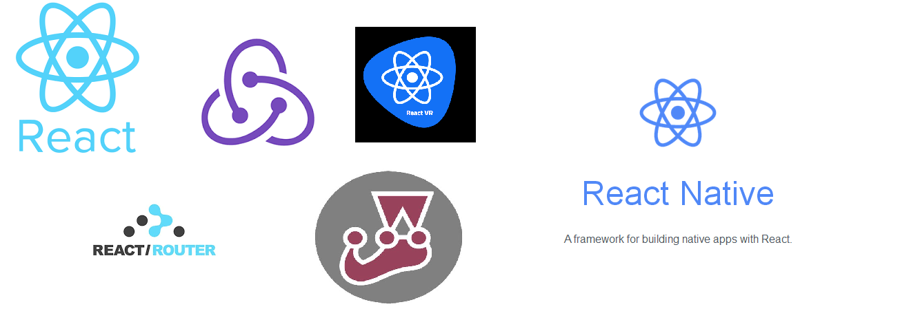
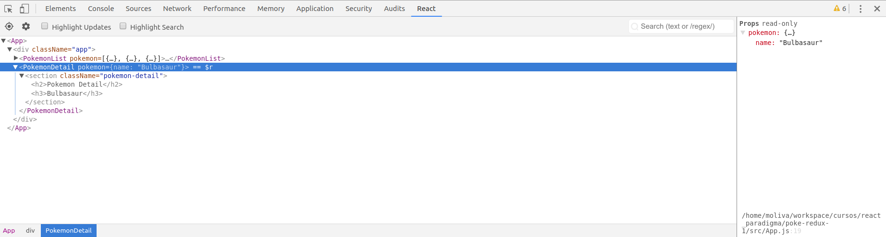
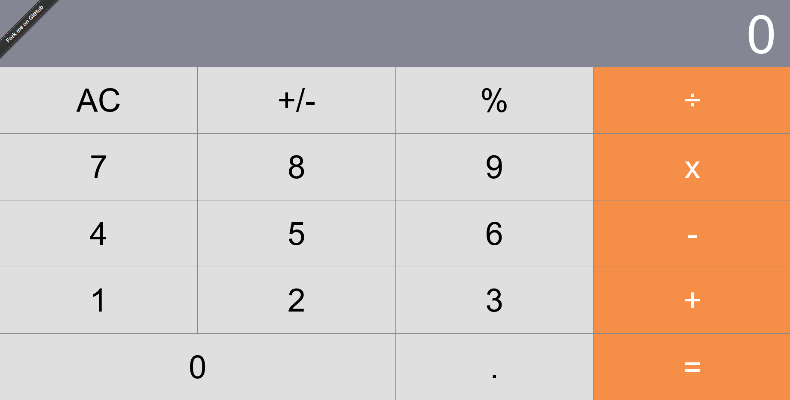
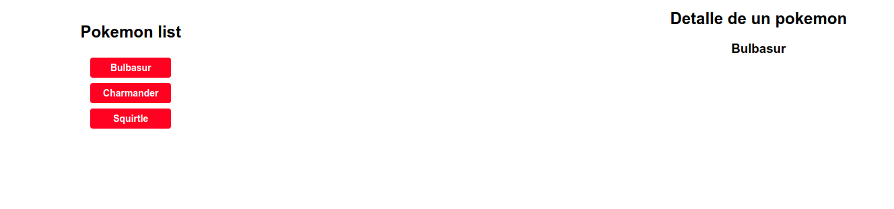

Introducción a React y Redux!
Miércoles 20 de junio: ReactJS
Miércoles 27 de junio: Redux
Abel Tamayo y Marisa Oliva
Introducción
¿Que es react js?
- Es una librería
- Creada y mantenida por facebook
- Licencia Facebook BSD+Patents
- Completamente OpenSource desde 2017, Licencia MIT
Ecosistema de React
Programación orientada a componentes
- Reutilizables
- Componibles
- Se encarga de la presentación
- No orientado a objetos
Un componente React
import React from "react";
import Display from "./Display";
import ButtonPanel from "./ButtonPanel";
import calculate from "../logic/calculate";
import "./App.css";
class App extends React.Component {
constructor(props) {
super(props);
this.state = {
total: null,
next: null,
operation: null,
};
}
handleClick = buttonName => {
this.setState(calculate(this.state, buttonName));
};
render() {
return (
<div className="component-app">
<Display value={this.state.next || this.state.total || "0"} />
<ButtonPanel clickHandler={this.handleClick} />
</div>
);
}
}
export default App;
Crear una aplicación
npx create-react-app my-app
cd my-app
npm start
Estructura del proyecto
my-app/
README.md
node_modules/
package.json
public/
index.html
favicon.ico
src/
App.css
App.js
App.test.js
index.css
index.js
logo.svg
Filosofia REACT JS
Programación declarativa
- Pasiva, no imperativa
- Segura frente a errores
- Buena para programar interfaces de usuario
Programación funcional
- Basada en funciones
- Independencia de cada componente
- Cada componente guarda su propio estado
Independencia de cada componente
- Cada componente guarda su propio estado
- Los componentes no se comunidan entre si
- React solo es la parte de presentación, la lógica y el flujo de datos deben ir en la parte de flux o redux
No se modifica la DOM solamente se sustituye
- Independencia de Jquery
- Virtual DOM
Entorno
ES6
Clases / Objetos
class Rectangulo {
constructor(alto, ancho){
this.alto = alto;
this.ancho = ancho;
};
area(){
return this.alto * this.ancho;
};
Arrow function
function suma (x, y){
return x + y;
};
suma = (x, y) => { return x + y; };
Template String
let nombre1 = "JavaScript";
let nombre2 = "awesome";
console.log(`Sólo quiero decir que ${nombre1} is ${nombre2`);
Let y const
- Let: declaración de variables controlando su ambito
- const: constantes
Import y export
Compilado por Babel
Webpack
Es un empaquetador
module.exports = {
resolve: {
extensions: ['', '.js', '.jsx']
},
entry: {
app: ['./index.jsx']
},
output: {
path: './build',
filename: 'app.js',
publicPath: '/build/
},
module: {
loaders: [
{
test: /(\.js|.jsx)$/,
loader: 'babel',
query: {
presets: ['es2015', 'stage-2', 'react']
}
}
]
}
}
Babel
Librería
Compilador
Compila ES6 (y propuestas) a Javascript compatible con todos los navegadores
Usado por Webpack
Configurado en .babelrc
JSX
Lenguaje de plantillas
Para implementar este DOM Virtual y que la experiencia de programarlo no sea un horror, Facebook utiliza la sintaxis de JSX
Eslint
Linter
Muy recomendado y muy usado dentro de la comunidad de OPENSOURCE
Redux
Librería de control de flujo de datos, sucesor de flux
- Abstrae los datos y su flujo y permite que React simplemente reaccione a sus cambios
- La comunidad lo aumenta con librerías, algunas de ellas imprescindibles
- Thunk y sagas para efectos secundarios y llamadas a servicios
Jest
Librería de testing de facebook
Muy similar a otros
Específico para React
Utiliza snapshot
Node y Yarn
No es obligatorio pero es preferible empaquetar el proyecto como un paquete de Node y gestionar las librerías (incluyendo Webpack, Babel, React y todas las que usemos) con Yarn y NPM
Devtools para React y redux

React JS en profundidad
Componentes y composición
Componentes y composición
render() {
return (
<div className="component-app">
<Display value={this.state.next || this.state.total || "0"} />
<ButtonPanel clickHandler={this.handleClick} />
</div>
);
}
Tipos de componentes
- Statefull Component
- Stateless Component
Statefull Component
- Se utilizan en clases
- Tienen un estado
- Se vuelven a renderizar cuándo se cambian las props y el estado
class MiBoton extends React.Component {
constructor(props) {
super(props);
this.state.style = { background: 'blue', color: 'white' };
}
render () {
return (
<button {...this.props} style={this.state.styles} />
);
}
}
Stateless Component
- Son funciones en vanilla js
- No tienen estado
- Solo funcionan a través de las props
- Componentes tontos e ideales para la reutilización
const MiBoton = props => {
const styles = { background: 'blue', color: 'white' }
return (
<button
{...props}
style={styles}
/>
)
}
Props
- Se reciben desde fuera del componente
- Pueden refrescarse y provocan que se llame al render
- No pueden modificarse
class Saludo extends React.Component {
render () {
return <p/>Hola, { this.props.nombre }<p/>
}
}
Props
- PropTypes
- Indica el tipo de la propiedad y si es obligatoria
- defaultProps
- Valores por defecto
MiBoton.propTypes = {
texto: React.PropTypes.string.isRequired
};
MiBoton.defaultProps = {
texto: "Click me!"
};
State
- Es interno de cada componente
- al cambiarse provocan que se llame al render
- Es único de los componentes statefull o clase
class Clock extends React.Component {
constructor(props) {
super(props);
this.state = {date: new Date()};
}
render() {
return (
<div><h1>Hello, world!</h1>
<h2>It is {this.state.date.toLocaleTimeString()}.</h2></div>
);
}
}
Children
Es una propiedad especial
<HelloWold>Google</HelloWold>
class HelloWold extends Component {
render() {
return (
Hola {this.props.children}
);
}
}
Refs
- Referencias de un componente hijo en el componente padre
- Permite acceder a los valores y a los métodos del componente
- Si abusamos algo estamos haciendo mal
class AutoFocusTextInput extends React.Component {
componentDidMount() {
this.textInput.current.focusTextInput();
}
render() {
return (
<CustomTextInput ref={this.textInput} />
);
}
}
Eventos
De la manera habitual
var InputFormidable = React.createClass({
eventoInput: function(event) {
// Aquí haremos algo...
},
render: function() {
return (
<div>
<input type='text' onKeyUp={this.eventoInput} />
</div>
)
}
});
Ciclo de vida
Construcción del componente
- componentWillMount -> DEPRECADO
- componentDidMount
Ciclo de vida
Actualización
- componentWillReceiveProps -> DEPRECADO
- componentWillUpdate --> DEPRECADO
- shouldComponentUpdate
- componentDidUpdate
- getDerivedStateFromProps --> NEW
Ciclo de vida
Desmontado del componente
- componentWillUnmount
Listas
Cuando queremos trabajar con listas necesitamos usar la función map con key
function NumberList(props) {
const numbers = props.numbers;
const listItems = numbers.map((number) =>
<li key={number.toString()}>
{number}
</li>
);
return (
<ul>{listItems}</ul>
);
}
const numbers = [1, 2, 3, 4, 5];
ReactDOM.render(
<NumberList numbers={numbers} >,
document.getElementById('root')
);
Estilos
Importando un archivo externo css
import React from 'react';
import './estilos.css';
Asignando clases con className
<section className="pokemon-detail">
<h2>Pokemon Detail</h2>
<h3>{pokemon.name}</h3>
</section>
Estilos
Asignar estilos con forma de objeto
import React from 'react';
const estilos = {
fontSize: '18px',
fontWeight: 'bold',
color: 'blue'
};
class Hello extends React.Component {
render() {
return (
<p style={estilos}>Hola Mundo!</p>
);
}
}
Animaciones
con css3
Librería oficial React Transition Group
Rutas
Básico para cualquier aplicación
Librería React Router
import React, { PropTypes } from 'react';
import { Provider } from 'react-redux';
import { Router, Route, browserHistory } from 'react-router';
import App from './App';
const Root = ({ store }) => (
<Provider store={store}>
<Router history={browserHistory}>
<Route path="/(:filter)" component={App} />
</Router>
</Provider>
);
Root.propTypes = {
store: PropTypes.object.isRequired,
};
export default Root;
i18n
No hay ninguna API por defecto en el core
Una de las más populares es React Intl
Ejercicio práctico
Continuara...